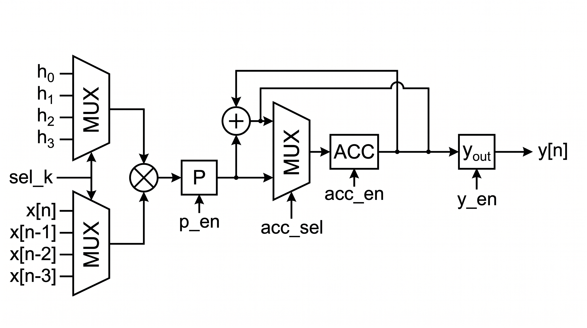
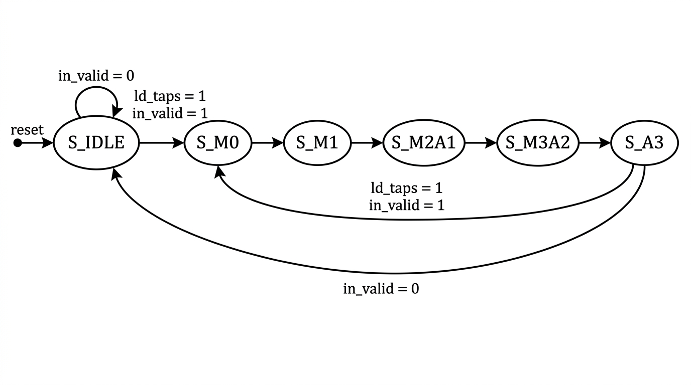

Módulo 6 · Ejercicio 3/5 · Folding
El DFG pide 7 operaciones pero el hardware disponible es 1 multiplicador + 1 sumador reutilizados en varios ciclos. El folding separa el qué (DFG) del cuándo/con-qué (scheduling + recursos). Al plegar, aparecen tres responsabilidades que en la forma directa no existían:
| Responsabilidad | Quién la resuelve | En tu diseño |
|---|---|---|
| Enrutar operandos (cada ciclo, otros datos al mismo operador) | Muxes + selectores | Dos mux 4:1 con sel_k (tap y coeficiente) |
| Retener parciales (el resultado de un ciclo se usa varios después) | Registros extra | P (producto) y acc (acumulador), más y_out |
| Secuenciar (emitir selects/enables en el orden justo) | FSM de control | 6 estados, Moore + 1 señal Mealy |
El "peaje del folding" es exactamente eso: muxes + registros + FSM + ciclos extra, a cambio de pasar de 7 operadores a 2.
| Ciclo | Multiplicador (×) | Sumador (+) | Escrituras | Lectura intuitiva |
|---|---|---|---|---|
| 1 | M₀ = x₀h₀ | — | P←M₀ | Arranco productos |
| 2 | M₁ = x₁h₁ | — | P←M₁, acc←P(=M₀) | Guardo M₀ "al pasar" |
| 3 | M₂ = x₂h₂ | A₁ = M₀+M₁ | P←M₂, acc←A₁ | Primera suma útil |
| 4 | M₃ = x₃h₃ | A₂ = A₁+M₂ | P←M₃, acc←A₂ | Solapo × y + |
| 5 | — | A₃ = A₂+M₃ = y | y_out←A₃ | Cierro la cadena |
Demostración de optimalidad (decila así), en dos pasos:
La cota inferior es 5 y el scheduling la alcanza ⇒ óptimo. Compará con los extremos: forma directa 4 ciclos con 7 operadores (throughput 1.00), secuencial naive 7 ciclos (0.57), la tuya 5 ciclos (0.80) con 2 operadores: recuperaste 2 ciclos gracias al solapado que la movilidad de ALAP anticipó.

Recorré el datapath en voz alta: línea de 4 taps x₀…x₃ que se desplaza solo cuando se acepta muestra nueva (no cada ciclo); dos mux 4:1 (tap, coeficiente) con sel_k; × compartido + P (p_en en ciclos 1–4, retiene M₃ en el 5); + compartido sumando acc+P; acc con mux 2:1 (acc_sel=0 captura P en ciclo 2, =1 captura la suma en 3–5); y_out que desacopla al consumidor. Anchos: 8b×8b→16b por producto; acc y salida 18b = 8+8+2 (4·255·255 = 260100 < 2¹⁸), justo sin overflow —verificado en el testbench con el caso borde h=x=255.
Handshake: in_ready=1 solo en IDLE o saliendo de S_A3 (si la entrada insiste durante el cómputo, se pierde —decisión de diseño documentada); out_valid pulso de 1 ciclo por muestra; y_out estable 5 ciclos.

| Estado | Micro-ops | Transición |
|---|---|---|
| S_IDLE | nada | in_valid ⇒ acepta (ld_taps) → S_M0 |
| S_M0 | P←x₀h₀ | → S_M1 |
| S_M1 | P←x₁h₁; acc←P | → S_M2A1 |
| S_M2A1 | P←x₂h₂; acc←acc+P | → S_M3A2 |
| S_M3A2 | P←x₃h₃; acc←acc+P | → S_A3 |
| S_A3 | y_out←acc+P | in_valid ⇒ directo a S_M0 (back-to-back); si no ⇒ IDLE |
Dos detalles de diseño:
ld_taps depende de in_valid en IDLE y S_A3), todo lo demás Moore ⇒ FSM trivial de verificar.Control y datapath viven en módulos separados (fir4_ctrl / fir4_datapath).
El testbench demuestra que el filtro calcula bien, pero no demuestra la premisa del ejercicio: que lo hace con un solo multiplicador y un solo sumador. Yo podría haber escrito un RTL que calcula perfecto usando 4 multiplicadores y el testbench pasaría igual. Por eso el run.sh cierra con Yosys (sintetizador open-source): lee tu SystemVerilog, lo elabora hasta netlist y cuenta las celdas reales. Es la diferencia entre "lo dibujé así" y "el silicio sintetizado tiene exactamente esto".
Lo que hace el script, en dos pasadas:
read_verilog -sv; hierarchy -top fir4_folded; flatten; proc; opt -fast; stat. Aplana la jerarquía (control + datapath juntos), convierte los always_ff en flip-flops y optimiza —pero sin mapear a compuertas—. En ese nivel todavía existen las celdas $mul (multiplicador) y $add (sumador) como bloques reconocibles, y el script cuenta: yosys = 1 y 1, esperado 1 y 1 → OK. El detalle clave: hay que contar antes del techmap, porque después el multiplicador se disuelve en cientos de AND/XOR y ya no podrías decir "hay un multiplicador".techmap, que baja todos los registros a celdas de 1 bit ($_DFF*). Sumando sus anchos da el total de flip-flops: yosys = 88, esperado 88 → OK.El presupuesto de 88 bits, sumando fila por fila (decilo así en tu presentación):
| Registro | Bits | De dónde sale |
|---|---|---|
| Línea de retardo x₀…x₃ | 4 × 8 = 32 | 4 taps de 8 bits (always_ff con ld_taps) |
| P (producto) | 16 | 8 + 8 por el × (prod) |
| acc (acumulador) | 18 | 8 + 8 + 2 de crecimiento (acc) |
| y_out (salida) | 18 | registra add_out en S_A3 |
| Estado de la FSM | 3 | 6 estados ⇒ 3 bits binarios (state) |
| out_valid | 1 | pulso registrado (out_valid_r) |
| Total | 32+16+18+18+3+1 = 88 |
multiplicadores ($mul) yosys= 1 esperado= 1 OK / sumadores ($add) yosys= 1 esperado= 1 OK / bits de registro yosys= 88 esperado= 88 OK— y decí: "el testbench prueba que calcula bien; Yosys prueba sobre el netlist sintetizado que lo hace con exactamente un multiplicador, un sumador y 88 flip-flops: la premisa del folding, verificada en silicio, no solo en el dibujo". Si hubieras inferido un × de más (p. ej. escribiendo xa*ha en dos bloques distintos), este chequeo lo delataría aunque el testbench pasara.Tu resolución completa: ej3_folding/README.md (scheduling, RTL, FSM, testbench, Yosys).
1. ¿Por qué 5 ciclos es el mínimo posible?
2. ¿Qué hace el ciclo 2 del scheduling?
3. Latencia, II y throughput correctos…
4. El back-to-back S_A3→S_M0 logra…